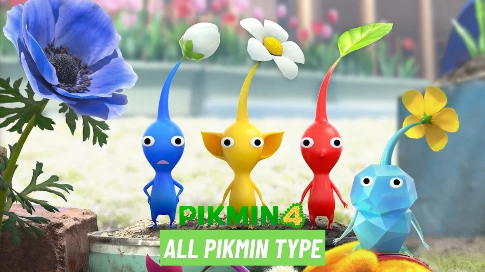
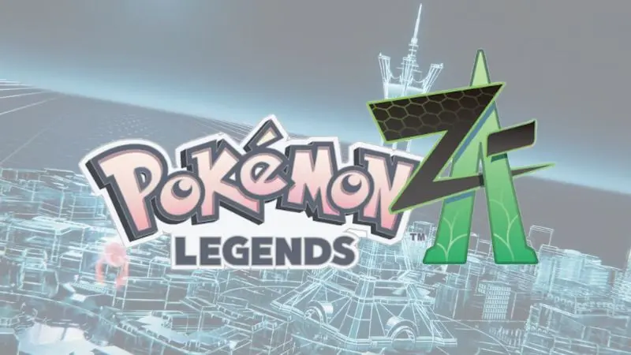

Super Mario Bros. Wonder. é um jogo eletrônico de plataforma desenvolvido e publicado pela Nintendo. Foi lançado para o Nintendo Switch em 20 de outubro de 2023, sendo o primeiro jogo de rolagem lateral da série Super Mario desde New Super Mario Bros. U (2012). O jogador controla Mario, Luigi e seus amigos enquanto eles tentam deter o vilão Bowser, que planeja assumir uma nova terra conhecida como o Reino das Flores depois de usar a mágica Flor Fenomenal para se fundir com o castelo do reino.

Pikmin 4 é um jogo eletrônico de estratégia em tempo real desenvolvido pela Nintendo EPD e publicado pela Nintendo. É o quarto jogo principal da série Pikmin, depois de Pikmin 3, e o sexto jogo no geral. Foi lançado no Nintendo Switch em 21 de julho de 2023

Pokémon Legends: Z-A[a] é um próximo videogame de 2025 desenvolvido pela Game Freak e publicado pela Nintendo e The Pokémon Company para o Nintendo Switch. Anunciado em fevereiro de 2024, Legends: Z-A faz parte da nona geração de videogames Pokémon. Acontece na cidade de Lumiose, na região de Kalos, com base em Paris, França, que se originou em Pokémon X e Y (2013). Legends: Z-A é o segundo jogo Pokémon Legends, seguindo Legends: Arceus (2022).

Shadow retorna em SONIC X SHADOW GENERATIONS, uma coleção com duas experiências originais!
Jogue uma campanha nova com a Forma de Vida Suprema! Percorra fases icônicas do Shadow, descubra segredos e desperte poderes para salvar o mundo.

Super Smash Bros. Ultimate é um jogo eletrônico de luta, desenvolvido pela Bandai Namco Studios e Sora Ltd. e publicado pela Nintendo. É o quinto jogo da série Super Smash Bros., sucedendo Super Smash Bros. for Nintendo 3DS & Wii U. Foi lançado para Nintendo Switch em 7 de dezembro de 2018.[1][2] O jogo segue o estilo tradicional de jogabilidade da série: controlando um dos diversos personagens, os jogadores devem usar ataques diferentes para enfraquecer seus oponentes e derrubá-los de uma arena. Ele possui uma grande variedade de modos de jogo, incluindo uma campanha para modos single-player e multiplayer versus. Ultimate apresenta mais de 80 lutadores jogáveis, incluindo todos os personagens dos jogos anteriores do Super Smash Bros., ao lado de vários recém-chegados.

The Legend of Zelda: Breath of the Wild é um jogo eletrônico de ação-aventura desenvolvido pela Nintendo Entertainment Planning & Development e publicado pela Nintendo. É o décimo nono título da série The Legend of Zelda e foi lançado mundialmente para Wii U e Nintendo Switch em 3 de março de 2017. A história segue Link, que acorda em uma Hyrule devastada após cem anos de sono e precisa recuperar suas memórias e derrotar o mal causado por Calamity Ganon. A jogabilidade é apresentada em um mundo aberto e os jogadores podem explorá-lo livremente, completando diferentes tipos de missões e resolvendo quebra-cabeças para a obtenção de recompensas.